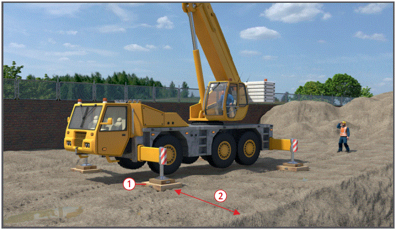
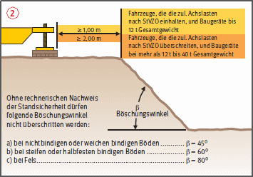
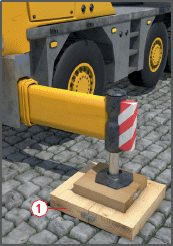

Gefährdungen
- Unzureichende Tragfähigkeit des Untergrundes, mangelhafte Abstützung oder Nichtbeachtung von Sicherheitsabständen an Baugrubenböschungen können zu Kranumstürzen führen.
- Bedienungsfehler, herabfallende Gegenstände, klimatische Einflüsse (Wind, Blitz) oder Stromüberschläge durch elektrische Freileitungen können zu Unfällen führen.
Schutzmaßnahmen
Aufstellung
- Kran auf tragfähigem Untergrund abstützen und waagerecht ausrichten, lastverteilende Unterlagen verwenden
 .
.
- Sicherheitsabstand im Bereich von Baugrubenböschungen und Grabenkanten nach den Vorgaben der DIN 4124 einhalten oder rechnerischen Nachweis der Standsicherheit erbringen
 .
.
- Sicherheitsabstand von mindestens 0,50 m zwischen sich bewegenden Teilen des Kranes und festen Teilen der Umgebung, z. B. Bauwerk, Gerüst, Materialstapel, einhalten.
- Kann der Sicherheitsabstand zu festen Teilen der Umgebung nicht eingehalten werden, gefährdeten Bereich absperren. Hinweis auf Quetschgefahr anbringen.
- Sicherheitsabstand zu elektrischen Freileitungen beachten. Kann der Sicherheitsabstand nicht eingehalten werden, Rücksprache mit Energieversorgungsunternehmen.
- Beim Zusammenbau von Gittermastauslegern die Montageanleitung des Herstellers beachten. Hieraus kann z. B. entnommen werden, ob und wie oft der Gittermastausleger beim Zusammenbau unterstützt werden muss.
- Lösbare Verbindungsbolzen zwischen einzelnen Gittermastteilen gegen Herausrutschen sichern, z. B. durch Splinte, Federstecker.
- Funktion des Hubendschalters durch Anfahren kontrollieren.
- Lastmomentenbegrenzung (LMB) entsprechend dem Rüstzustand einstellen.
Betrieb
- Kran nur von besonders unterwiesenen, mindestens 18 Jahre alten, körperlich und geistig geeigneten und vom Unternehmer schriftlich beauftragten Kranführern bedienen lassen.
- Einweiser einsetzen, wenn der Kranführer die Last nicht beobachten kann. Verständigung mit dem Einweiser durch festgelegte Handzeichen oder Sprechfunk.
- Bei Überschneidung von Arbeitsbereichen mehrerer Krane Arbeitsabläufe vorher festlegen und für einwandfreie Verständigung untereinander sorgen, z. B. durch Sprechfunk.
- Gewicht von Lasten vor dem Anheben ermitteln. Lastmomentenbegrenzung nicht als Waage benutzen.
- Nach Ansprechen der Lastmomentenbegrenzung Last nicht durch Einziehen des Auslegers aufnehmen.
- Lange Lasten, die sich beim Transport verfangen können, mit Leitseilen führen.
- Verfahren des Kranes mit der Last am Haken nur wenn der Hersteller dies in der Betriebsanleitung zulässt und die Vorgehensweise beschreibt.
- Das Heben von Personen mit Kranen ist nur im Ausnahmefall nach TRBS 2121 Teil 4 bzw. DGUV Regel 101-005 (BGR 159) möglich. Für Personenbeförderung nur geprüfte Personen- oder Arbeitskörbe verwenden, 14 Tage vorher bei der Berufsgenossenschaft schriftlich anzeigen und Kran durch Sachkundigen prüfen lassen.
Zusätzliche Hinweise zu den Pflichten des Kranführers
- Funktionsüberprüfung sämtlicher Notendschalter und Bremsen täglich vor Aufnahme des Kranbetriebes.
- Nur Kranhaken mit Hakensicherung verwenden. Funktion der Hakensicherung regelmäßig überprüfen.
- Seile regelmäßig pflegen sowie auf Seilschäden hin kontrollieren.
- Lasten nicht schrägziehen und pendeln, festsitzende Lasten nicht mit dem Kran losreißen.
- Kranbetrieb einstellen, wenn die Last bei Windeinwirkung nicht sicher gehalten und abgenommen werden kann, oder wenn Mängel auftreten, die die Betriebssicherheit gefährden.
- Keine Personen mit der Last oder dem Lastaufnahmemittel befördern.
- Lasten nicht am unbesetzten Kran hängen lassen.

Zusätzliche Hinweise zum Betrieb im Straßenverkehr
- Ausleger auf dem Fahrgestell festlegen und Oberwagen verriegeln.
- Zubehörteile festlegen und gegen Herabfallen sichern.
- Abstützungen gegen Herausrutschen sichern.
Prüfungen
- Prüfungen und Kontrollen nach Betriebssicherheitsverordnung (Anhang III) festlegen und diese veranlassen, z. B.:
- vor jedem neuen Einsatz Kontrolle der Sicherheitsfunktionen durch Kranführer,
- nach Bedarf, jedoch min. 1x jährlich durch eine "zur Prüfung befähigte Person" (z.B. Sachkundiger),
- nach wesentlichen Änderungen und sonst regelmäßig alle 4 Betriebsjahre im 13. Betriebsjahr und danach jährlich durch einen ermächtigten Sachverständigen.
- Selbstfahrende Krane müssen beim Verkehr auf öffentlichen Straßen zusätzlich nach der Straßenverkehrs-Zulassungs-Ordnung geprüft werden.
- Auch Prüfhinweise in Betriebsanleitungen der Hersteller beachten.
- Ergebnisse der regelmäßigen Prüfungen dokumentieren.

Arbeitsmedizinische Vorsorge
- Arbeitsmedizinische Vorsorge nach Ergebnis der Gefährdungsbeurteilung veranlassen (Pflichtvorsorge) oder anbieten (Angebotsvorsorge). Hierzu Beratung durch den Betriebsarzt.
07/2021